This VI is used to open the connection to a navX MXP unit over SPI or I2C.
This VI closes the connection to the navX MXP unit.

This VI reads data from a navX MXP unit. Teams sould not normally need to call this.

This VI writes data from a navX MXP unit. Teams sould not normally need to call this.
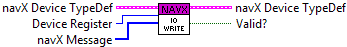
This VI gets the refnum for a navX MXP unit.


This VI sets the refnum for a navX MXP unit.
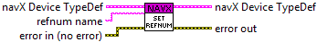
This VI gets Raw Acceleration data from a navX MXP unit.
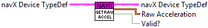
This VI gets Raw Gyro data from a navX MXP unit.
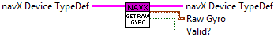
This VI gets Raw Magnetometer data from a navX MXP unit.
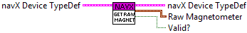
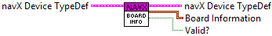
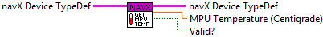

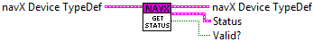

This VI gets Altitude data from a navX MXP unit.
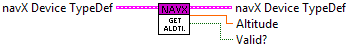
This VI gets Displacement data from a navX MXP unit.
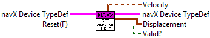
This VI gets Fused Heading data from a navX MXP unit.

This VI gets Linear Acceleration data from a navX MXP unit.
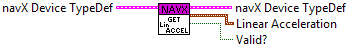
This VI gets Quaternion data from a navX MXP unit.

This VI reads Yaw, Pitch, Roll, Heading data from a navX MXP unit.
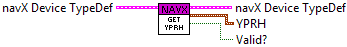